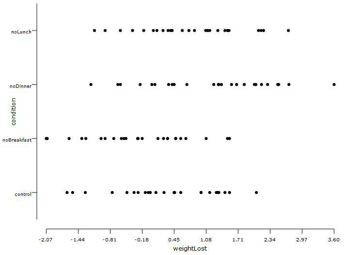

Mixed-design ANOVA is used when there are 2 independent variables (one between-groups factor and one within-groups factor) and a dependent variable. It is used to see the effect of each independent variable on the dependent variable as well as the interaction between the two independent variables.
Conditions:
- Between-subjects experimental design
- Within-subjects experimental design
- The dependent variable is in interval or ratio scale
- The independent variable of the within-group experiment should have at least two categorically related groups or matched groups.
- The independent variable of the Between-group experiment should have at least two categorically independent groups.
- No significant outliners from either Witihin-group or Between-group studies.
- The dependent variable is approximately normally distributed for each combination of the groups of your two factor/independent variables.
- Homogeneity of variances between within-group and between-group is required.
Examples:
Example 1: Does skipping a meal lead to weight loss? If so, does it vary for different meals? In this experiment, we compare the weight lost by participants under four different conditions: skip breakfast, skip lunch, skip dinner, and control. We measured the amount of weight lost (positive value means that weight was lost) and the absolute BMI after 3 months. The experiment follows a between-group design. Following the experiment, we also get the satisfaction rating from the participant. The amount of exercise of the participant is also considered as an independent variable. This graph depicts the between group part of the experiment wherein the dependent variable is weight loss

For the same data, if we had data of weightloss over time, this would have given us the within-group data with different conditions and time as the independent variable and the weight loss being the dependent variable.
Example 2: The following is an example of mathematical notation, written in LaTeX and rendered by SVG via mathjax library $a \ne 0$